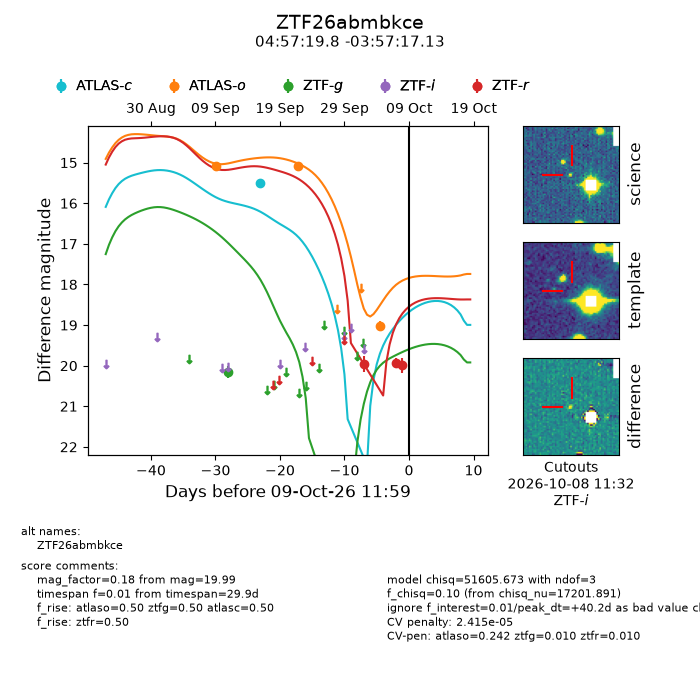
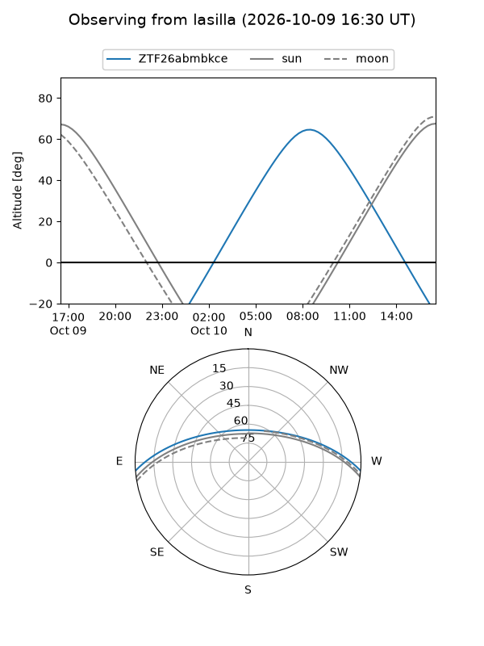
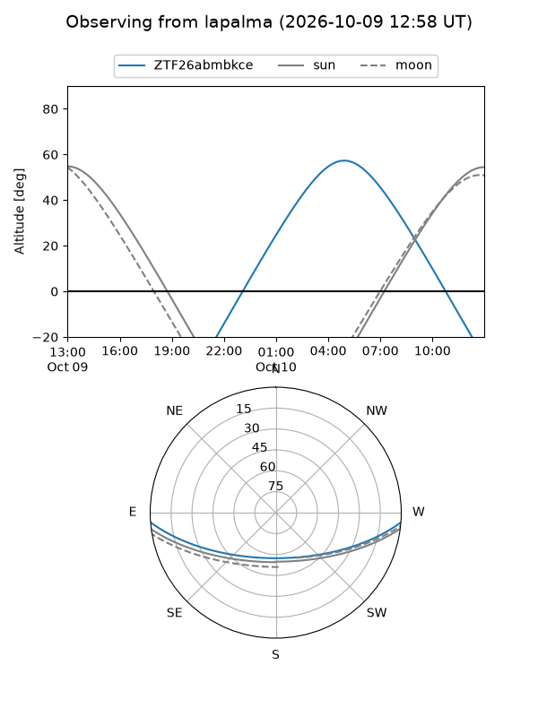
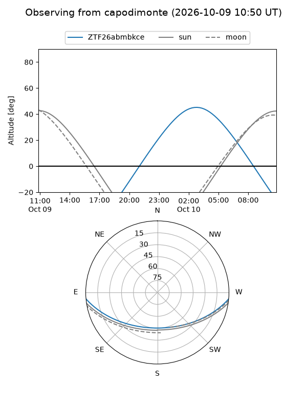
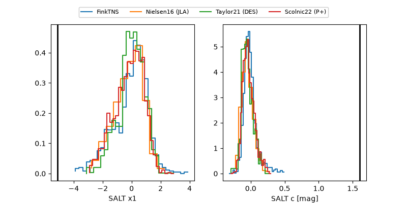

ZTF26abmbkce
Target ZTF26abmbkce at 2026-10-09 12:01
Aliases and brokers:
FINK-ZTF: ztf.fink-portal.org/ZTF26abmbkce
Lasair-ZTF: lasair-ztf.lsst.ac.uk/objects/ZTF26abmbkce
ALeRCE-ZTF: alerce.online/object/ZTF26abmbkce
Direct TNS query: direct search
alt names
ZTF26abmbkce (ztf,fink_ztf)
Coordinates:
equatorial (ra, dec) = 74.3326,-3.95476
equatorial (HMS+DMS) = 04:57:19.83,-03:57:17.13
galactic (l, b) = (202.8487,-27.09511)
Flags:
peak dt: +40.2
likely cv: !!
Photometry:
last atlasc=15.51, atlaso=19.03, ztfg=20.15, ztfr=19.99
1 atlasc, 3 atlaso, 1 ztfg, 3 ztfr detections
Lightcurve

Visibility



Additional plots
